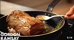
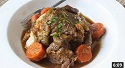

| Video Name | Description | Length | Youtube Channel | Thumbnail |
|---|---|---|---|---|
| Tagliatelle with Quick Sausage Meat Bolognese | Gordon's take on a real classic, mixing sausage meat with cherry tomatoes to make a genuine rustic treat. Perfect when you're on the go but still want fresh and delicious food, cooked fast. | 1:24 | Gordan Ramsay | |
| Gordon Ramsay's Guide To Steak | Learn the different cuts of beef, and what to look for in a steak. | 9:13 | Gordan Ramsay |  |
| Balsamic Rosemary Pork Tenderloin Recipe | Simple recipe for a balsamic glazed rosemary pork tenderloin. Served with golden Yukon potatoes and pearl onions. | 11:16 | Laura in the Kitchen | |
| Beef Stroganoff Recipe | Beef stroganoff with a white wine infused sauce served over buttered egg noodles. | 7:58 | Laura in the Kitchen | |
| Slow Cooker Beef Pot Roast Recipe | Chef John's take on a savory slow cooker pot roast. | 6:08 | Food Wishes |  |
| Penang Pork Satay - Grilled Pork Skewers | Learn how to make Penang Pork Satay! Inspired by the flavors of Malaysia, these incredibly delicious grilled pork skewers will be a huge hit at your next cook out. | 8:16 | Food Wishes | |
| Tasty and Authentic Pad Thai Recipe! | Special guest chef and owner of the brilliant Rosa's Thai Cafe group of restaurants gives us her authentic Pad Thai recipe, perfectly balanced with sweet and sour flavour. The combination of fresh prawns, fried tofu and classic rice noodles make this dish completely irresistible. | 11:35 | School of Wok | |
| Deliciously Spicy Chinese Kung Pao Chicken Recipe | Kung Pao Chicken is a firm favourite of Chinese cuisine the world over, but with so many variations - people are often unsure as to exactly what it's made up of. To add some clarity, Jeremy's recipe fronts tangy goodness and spice aplenty thanks to the addition of Szechuan peppercorns and bird's eye chillies. | 9:08 | School of Wok | |
| How to make delicious Butter Chicken | This recipe for Butter Chicken is one of my favourites. This is a healthier and easier version of the popular Take Away dish. You can make a Vegetarian version by using Paneer or Potatoes. Enjoy! | 5:12 | Food with Chetna |